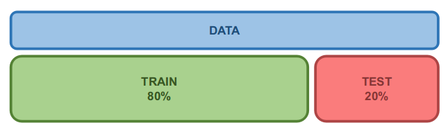
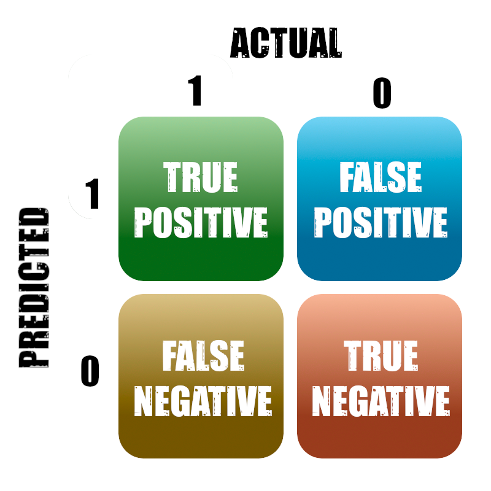

Classification #
Paolo Bonfini, 2025. All rights reserved.
This work is the intellectual property of Paolo Bonfini. All content produced in this notebook is original creation of the author unless specified otherwise. Unauthorized use, reproduction, or distribution of this material, in whole or in part, without explicit permission from the author, is strictly prohibited.
The simplest case: 1D class separation#
Let’s start from the simplest possible case \(\rightarrow\) a 1D case, with 2 classes.
import numpy as np
import matplotlib.pyplot as plt
X = np.array([-0.2, 0.3, 0.6, 1.4, 1.7, 2.3, 2.4, 2.6, 3.1, 3.5, 4.0, 4.2, 4.9])
labels = np.array([0, 0, 0, 0, 1, 1, 0, 0, 1, 1, 1, 1, 1])
plt.figure(figsize=(8, 2))
plt.scatter(X[labels==0], np.zeros(sum(labels==0)), s=100, c='royalblue', label='class A', marker='o')
plt.scatter(X[labels==1], np.zeros(sum(labels==1)), s=100, c='crimson', label='class B', marker='^')
plt.gca().spines['top'].set_visible(False)
plt.gca().spines['right'].set_visible(False)
plt.gca().spines['left'].set_visible(False)
plt.yticks([])
plt.axhline(0, color='grey', linewidth=1, zorder=-1)
plt.legend(ncol=3, handletextpad=0.2, columnspacing=0.5)
plt.show()
Q: How can I place a separation threshold between the two classes?
[Spoiler] (click here to expand)
\(\rightarrow\) We need to define a metric for classification error!
Logistic Regression#
Let’s add the \(y\) dimension:
we send class A to \(\rightarrow\) 0
we send class B to \(\rightarrow\) +1
… and use a function to ‘fit’ the new distribution:
from matplotlib import pyplot as plt
import matplotlib.patches as patches
# Create the additional dimension:
y = labels.copy()
y[labels == 0] = 0
y[labels == 1] = +1
# Define a function
def logistic_function(x):
A = 5
return 1 / (1 + np.exp(-A*(x-2)))
xx = np.linspace(np.min(X), np.max(X), 1000)
x_half = np.interp(0.5, logistic_function(xx), xx)
'''Approximate position at which the function equals 0.5.'''
fig = plt.figure()
plt.scatter(X[y == 0], y[y == 0], marker='o', s=50, c='royalblue', label='class 0')
plt.scatter(X[y == +1], y[y == +1], marker='^', s=50, c='crimson', label='class 1')
plt.plot(xx, logistic_function(xx), color='grey', label='mysterious function of unknow origin')
#
# Draw arrows to the x-axis and y-axis:
arrow_to_yaxis = patches.FancyArrowPatch((0, 0.5), (x_half, 0.5),
arrowstyle='->', mutation_scale=15, color='darkgrey')
arrow_to_xaxis = patches.FancyArrowPatch((x_half, 0.5), (x_half, 0),
arrowstyle='->', mutation_scale=15, color='darkgrey')
plt.gca().add_patch(arrow_to_xaxis)
plt.gca().add_patch(arrow_to_yaxis)
plt.legend(loc='upper left', bbox_to_anchor=(1., 0.95))
plt.show()
If the function is symmetric:
separation threshold \(\rightarrow\) \(x_t\) | \(f(x_t) = 0.5\)
\(x <= x_t\) \(\rightarrow\) class 0
\(x >~~x_t\) \(\rightarrow\) class 1
We need to fit our function to the data: classification \(\rightarrow\) regression
Linear Regression (reminder)
We saw that we can express the multi-dimensional linear regression model in matrix notation as:
or equivalently, in functional notation, for sample \(i\):
where \(j\) is the feature index, and \(\pmb{w} = [w^1, w^2, w^3, ... w^p]\) is the vector of weights.
NOTE: We switch to this notation to follow the usual nomenclature for Logistic Regression.
Logistic Regression
Is simply a regression task in which we switch the fitting function:
(where we omit the sample index \(i\) for readibility)
And, as usual, fitting a [logistic] function means:
Find the \(\pmb{w}\) that minimizes the residuals (\(\hat{\pmb{w}}\))
… although notice that this is NOT a linear model!
Q: Can you invert the formula to find the \(\pmb{w}\) that minimizes the residuals?
[Spoiler] (click here to expand)
Guess what …
Solving the Logistic Regression problem#
There is no closed form solution (no analytical solution).
\(\rightarrow\) We can solve by Gradient Descent!
But we need to re-formulate the problem a bit more conveniently.
Let’s see it in terms of probability:
\( p_1(\pmb{x}, \pmb{w})\) is the probability to obtain class 1 for a given pair (\(\pmb{x}\), \(\pmb{w})\)
Automatically, when there are only 2 classes:
where \( p_0(\pmb{x}, \pmb{w})\) is the probability to obtain class 0 for a given pair (\(\pmb{x}\), \(\pmb{w})\)
We can then solve the problem by maximizing the conditional Likelihood:
i.e., the probability to have obtained the observed classes \(\pmb{y}\) (of all samples) if we were given \(\pmb{X}\) (of all samples) and our Logistic model with weigths \(\pmb{w}\) was a correct assumption
NOTE: Read this statement again, carefully.
Calculating the conditional Likelihood#
\( P(\pmb{y} | \pmb{X}, \pmb{w})\) is the total probability for the whole dataset \(\pmb{X}\) with labels \(\pmb{y}\).
If each datapoint is i.i.d. (= independent and identically distributed random variables), the total probability is given by the multiplication of the idividual probabilities of each sample \(i\):
E.g.: I flip a coin 10 times, which is the probability to obtain 10 heads (= class 1)?
IMPORTANT: \(\pmb{x}_i\) (one sample) is a vector of \(p\) features: \(\pmb{x}_i = [x^0_i, x^1_i, x^2_i, ..., x^p_i]\), but it has 1 single label: \(y_i\).
We can write this compactly as:
Therefore, finding the best-fitting \(\pmb{w}\) becomes this problem:
However, dealing with products is usually complicated \(\rightarrow\) we take the log (so \(\Pi\) becomes a \(\sum\))
If \(\pmb{w}\) maximizes the \(\Pi_i P(y_i | \pmb{x_i}, \pmb{w})\), it also maximises its log
One last semplification, and we are done#
We just have to write \(log P(y_i | \pmb{x_i}, \pmb{w})\), completely equivalently, with this old-school trick:
Because, given a sample \(i\)
if its \(y_i\) equals 1 \(\rightarrow\) \(log P(y_i | \pmb{x_i}, \pmb{w}) = log P(y_i=1 | \pmb{x_i}, \pmb{w}) + 0\)
if its \(y_i\) equals 0 \(\rightarrow\) \(log P(y_i | \pmb{x_i}, \pmb{w}) = 0 + log P(y_i=0 | \pmb{x_i}, \pmb{w})\)
so the definition holds no matter the actual label.
Or, if you like this nomenclature better:
To conclude, we substitute Equation 1 and 2:
Using Gradient Descent#
We now have all the elements in Equation 3:
This is a maximization problem.
But no worries! \(\rightarrow\) We just add a “\(-\)” and becomes the good ol’ minimization we saw in the previous lecture:
where we call the summatory “conditional log Likelihood”, \(l(\pmb{w})\):
The solution \(\pmb{\hat{w}}\) can be iteratively found using Gradient Descent to minimize \(l(\pmb{w})\):
REMINDER: $\(\nabla l(\pmb{w}) = [{\partial \over \partial w^0}l(\pmb{w}), {\partial \over \partial w^1}l(\pmb{w}),, {\partial \over \partial w^2}l(\pmb{w}), ... {\partial \over \partial w^p}l(\pmb{w}) ]\)$
Thank sklearn for one-liner LogisticRegression#
from sklearn.linear_model import LogisticRegression
# Same data as above, but formatted for sklearn:
X = X.reshape(-1, 1)
y = labels
clf = LogisticRegression(random_state=42)
clf.fit(X, y)
'''NOTE: The random state is for the Gradient Descent.'''
# Predicting
X_test = [[3]] # don't forget that sklearn expects 2D inputs
clf.predict(X_test)
array([1])
Which is the probability that X_test is class 0 or 1?
\(p_1\) \(\rightarrow\) It is literally the value on the Logistic Function curve!
We can get \(p_0\) and \(p_1\) as:
clf.predict_proba(X_test)
array([[0.28107324, 0.71892676]])
Where, by definition: \(p_0 = 1 - p_1\)
Visualizing the results#
To visualize the Logistic Function curve, let’s predict along all the \(x\)-axis:
xx = np.linspace(np.min(X), np.max(X), 1000)
yy_model = clf.predict_proba(xx.reshape(-1, 1))[:,1]
'''NOTE: We keep only [:, 1], i.e. p_1, or else we would plot two symmetric
curves!
''';
#yy_model = clf.predict_proba(xx.reshape(-1, 1)) # uncomment to visualize both curves
and plot:
yhat_test = clf.predict_proba(X_test)[:,1]
'''NOTE: Keeping only p1 also for `X_test`'''
fig = plt.figure()
plt.scatter(X[y == 0], y[y == 0], marker='o', s=50, c='royalblue', label='true class 0')
plt.scatter(X[y == +1], y[y == +1], marker='^', s=50, c='crimson', label='true class 1')
plt.plot(xx, yy_model, color='grey', label='Fitted logistic funcion')
#
# Draw segments to the x-axis and y-axis:
plt.plot([X_test[0][0], X_test[0][0]], [0, yhat_test[0]], 'C2', ls='-', linewidth=1)
plt.plot([0, X_test[0][0]], [yhat_test[0], yhat_test[0]], 'C2', ls='-', linewidth=1)
plt.scatter(X_test[0][0], 0, color='C2')
plt.text(X_test[0][0]*1.05, 0, '$X_{test}$', rotation=90, fontsize=12, color='C2')
plt.text(0, yhat_test[0]*1.05, str('%.2f' % yhat_test[0]), rotation=0, fontsize=10, color='C2')
plt.axhline(y=0.5, ls='--', c='grey', label='Decision threshold')
plt.legend(loc='upper left', bbox_to_anchor=(1., 0.95))
plt.show()
NOTE
In the book you will find the Logistic Regression classifier used not via LogisticRegression \(-\) but via the Stochastic Gradient Descent:
from sklearn.linear_model import SGDClassifier
sgd_clf = SGDClassifier(max_iter=1000, tol=1e-3, random_state=42, loss='log_loss')
And this is because SGD + log_loss == LogisticRegression
Exercise [20 min]
Objective: Try to predict if a person “Survived”, in the provided “Titanic” test set.
Tasks:
Use all numerical features (discard the categorical features, such as strings) to train a
LogisticRegressionmodelPredict the percentage of passengers in the test set who survived
The test set has no “Survived” column to know the ground truth, how to check if the results make sense?
\(\rightarrow\) compare the distributions of probabilities in the train and test sets using histograms.
Hints:
For task 1 \(-\) You can list the data types as:
df_data.dtypes
For task 1 \(-\) You can extract columns from a dataframe as:
X = df[<column_names>].values
For task 3 \(-\) First, predict the probabilities for all the samples in the train/test sets with
predict_proba()Do not hit any iceberg on the way
import seaborn as sns
from sklearn.model_selection import train_test_split
# Load dataset
df_data = sns.load_dataset("titanic")
# Drop columns overfilled with 'NaN'
df_data = df_data.drop(columns=["deck"])
# Drop rows with 'NaN' or icebergs:
df_data.dropna(inplace=True)
# Split (e.g., 80% train, 20% test)
df_train, df_test = train_test_split(df_data, test_size=0.2, random_state=42, stratify=df_data["survived"])
print('Train:')
display(df_train.head(5))
print('Test:')
display(df_test.head(5))
Train:
| survived | pclass | sex | age | sibsp | parch | fare | embarked | class | who | adult_male | embark_town | alive | alone | |
|---|---|---|---|---|---|---|---|---|---|---|---|---|---|---|
| 599 | 1 | 1 | male | 49.0 | 1 | 0 | 56.9292 | C | First | man | True | Cherbourg | yes | False |
| 37 | 0 | 3 | male | 21.0 | 0 | 0 | 8.0500 | S | Third | man | True | Southampton | no | True |
| 555 | 0 | 1 | male | 62.0 | 0 | 0 | 26.5500 | S | First | man | True | Southampton | no | True |
| 810 | 0 | 3 | male | 26.0 | 0 | 0 | 7.8875 | S | Third | man | True | Southampton | no | True |
| 360 | 0 | 3 | male | 40.0 | 1 | 4 | 27.9000 | S | Third | man | True | Southampton | no | False |
Test:
| survived | pclass | sex | age | sibsp | parch | fare | embarked | class | who | adult_male | embark_town | alive | alone | |
|---|---|---|---|---|---|---|---|---|---|---|---|---|---|---|
| 190 | 1 | 2 | female | 32.0 | 0 | 0 | 13.0000 | S | Second | woman | False | Southampton | yes | True |
| 292 | 0 | 2 | male | 36.0 | 0 | 0 | 12.8750 | C | Second | man | True | Cherbourg | no | True |
| 762 | 1 | 3 | male | 20.0 | 0 | 0 | 7.2292 | C | Third | man | True | Cherbourg | yes | True |
| 737 | 1 | 1 | male | 35.0 | 0 | 0 | 512.3292 | C | First | man | True | Cherbourg | yes | True |
| 812 | 0 | 2 | male | 35.0 | 0 | 0 | 10.5000 | S | Second | man | True | Southampton | no | True |
The attributes have the following meaning:
survived: target variable, 0 means the passenger did not survive, while 1 means they survived.
pclass: passenger class.
sex: gender of the passenger.
age: age of the passenger in years.
sibsp: number of siblings and spouses aboard the Titanic.
parch: number of parents and children aboard the Titanic.
fare: price paid (in pounds).
embarked: port of embarkation (coded as C = Cherbourg, Q = Queenstown, S = Southampton).
class: string version of passenger class.
who: description of the passenger type (man, woman, child).
adult_male: whether the passenger is an adult male.
deck: deck where the cabin was located.
embark_town: full name of the embarkation town.
alive: string indicating if the passenger survived.
alone: whether the passenger was travelling alone.
Our solution
\(k\)-Nearest Neighbors classifier (a.k.a. \(k\)NN)#
The \(k\)NN classifier is arguably the simples ML algorithm:
Train \(\leftarrow\) Store all the data (and relative distances)
Predict \(\leftarrow\) Return majority label of the closest \(k\) instances

|
Figure 1. Prediction stage of a $k$NN classifier with $k$ = 3. (From Figure 1-15 in Gerone's book) |
How to deal with ties?
(e.g. \(k = 2\), and the one sample is class 0, while the other is class 1)?
\(\rightarrow\) Return class of closest neighbor
or
\(\rightarrow\) Return a random class
or
\(\rightarrow\) Return the class of the first of the \(k\) neighbors (sklearn’s default)
or
… your made up rule
If you want to avoid troubles \(-\) if you have:
even number of classes \(\rightarrow\) pick an odd \(k\)
odd number of classes \(\rightarrow\) pick an even \(k\)
Back to the 1D problem#
Let’s go back to the 1D problem and try to classify the \(X_{test}\) point using \(k\)NN.
import numpy as np
import matplotlib.pyplot as plt
X = np.array([-0.2, 0.3, 0.6, 1.4, 1.7, 2.3, 2.4, 2.6, 3.1, 3.5, 4.0, 4.2, 4.9])
labels = np.array([0, 0, 0, 0, 1, 1, 0, 0, 1, 1, 1, 1, 1])
X_test = [[1.9]] # sklearn expects 2D input
plt.figure(figsize=(8, 2))
plt.scatter(X[labels==0], np.zeros(sum(labels==0)), s=100, c='royalblue', label='class 0', marker='o')
plt.scatter(X[labels==1], np.zeros(sum(labels==1)), s=100, c='crimson', label='class 1', marker='^')
plt.scatter(X_test[0], [0], s=100, c='forestgreen', label='$X_{test}$', marker='x')
ax = plt.gca()
ax.spines['top'].set_visible(False)
ax.spines['right'].set_visible(False)
ax.spines['left'].set_visible(False)
plt.yticks([])
plt.legend(ncol=3, handletextpad=0.2, columnspacing=0.5)
plt.show()
from sklearn.neighbors import KNeighborsClassifier
# Same data as above, but formatted for sklearn:
X = X.reshape(-1, 1)
y = labels
clf = KNeighborsClassifier(n_neighbors=4, algorithm='brute')#, weights='distance')
clf.fit(X, y)
'''NOTE: This is a tie case. `KNeighborsClassifier` will return the class of
the first of the k neighbors it encounters.
Uncomment the `weights` argument, and see how the classification
changes when the distances are taken into account.
'''
# Predict:
X_test = [[1.9]] # don't forget that sklearn expects 2S inputs
clf.predict(X_test)
array([0])
As for LogisticRegression, also for KNeighborsClassifier we can get the probabilities \(p_0\) and \(p_1\):
clf.predict_proba(X_test)
array([[0.5, 0.5]])
Q: How can KNeighborsClassifier calculate those probabilities? (In-class discussion)
[Spoiler] (click here to expand)
Probability of class \(c\): $\( p_c = {\mathcal{N}(y_i == c)\over k } ~~~,~~~for~i~\in~set(neighbors)\)$
\(k\)NN in multi-dimension, multi-class#
As many other classifiers \(-\) KNeighborsClassifier generalizes to multi-dimension, multi-class.
3 classes, 2 features.
from sklearn.datasets import make_classification
from sklearn.neighbors import KNeighborsClassifier
# Let's create some mock data:
X, y = make_classification(n_samples=1000, n_classes=3, n_features=2,
n_informative=2, n_redundant=0, n_clusters_per_class=1,
class_sep=1.5, shift=0, scale=1.0, random_state=42)
colors = {0: 'C0', 1: 'C1', 2: 'C2'}
# colors dictionary indexed by class label
# Plot:
fig = plt.figure(figsize=(4, 4))
plt.scatter(X[y==0,0], X[y==0,1], c=colors[0], marker='o', edgecolors='k', alpha=0.5)
plt.scatter(X[y==1,0], X[y==1,1], c=colors[1], marker='o', edgecolors='k', alpha=0.5)
plt.scatter(X[y==2,0], X[y==2,1], c=colors[2], marker='o', edgecolors='k', alpha=0.5)
plt.xlabel('X1')
plt.ylabel('X2')
plt.show()
# Fit:
clf = KNeighborsClassifier(n_neighbors=15)
clf.fit(X, y)
'''
IMPORTANT: We should have normalized the data first, to make sure that the
distance between points is not dominated by the feature with the largest
dynamical range.
In this case, though, we shall not worry as the features are already
scaled when they have been generated by `make_classification`.
''';
# Predict:
X_test = [[0, 1]]
yhat_test = clf.predict(X_test)
# Plot:
fig = plt.figure(figsize=(4, 4))
plt.scatter(X[y==0,0], X[y==0,1], c=colors[0], marker='o', edgecolors='k', alpha=0.5)
plt.scatter(X[y==1,0], X[y==1,1], c=colors[1], marker='o', edgecolors='k', alpha=0.5)
plt.scatter(X[y==2,0], X[y==2,1], c=colors[2], marker='o', edgecolors='k', alpha=0.5)
#
plt.scatter(X_test[0][0], X_test[0][1], marker='s', s=80, c=colors[yhat_test[0]])
plt.text(X_test[0][0], X_test[0][1]-0.6, '$X_{test}$', fontsize=12, color='grey')
plt.xlabel('X1')
plt.ylabel('X2')
plt.show()
Visualizing the Decision Boundaries#
So we have a trained classifier clf.
How can we see the boundaries between classes?
In other words: we want to display which area of the plot belong to a class or another
By repeating the prediction at each and every point in the feature space, we may visualize the decision surface:
{kind=link}
|
Figure 1. Application of a k-NN classifier considering k = 3 neighbors. Left - Given the test point "?", the algorithm seeks the 3 closest points in the training set, and adopts the majority vote to classify it as "class red". Right - By iteratively repeating the prediction over the whole feature space (X1, X2), one can depict the "decision surface". (Image credits: Paolo Bonfini) |
Brute force! \(\rightarrow\) We apply predict() on all points on the whole (\(X^1\), \(X^2\)) plane!
# Generate a grid of points to make predictions:
x1_min, x1_max = X[:, 0].min() - 1, X[:, 0].max() + 1
x2_min, x2_max = X[:, 1].min() - 1, X[:, 1].max() + 1
xx1, xx2 = np.meshgrid(np.arange(x1_min, x1_max, 0.1), np.arange(x2_min, x2_max, 0.1))
print('The grid we created contains %s points' % np.shape(xx1.ravel())[0])
# Use the KNN classifier to make predictions on the grid:
Z = clf.predict(np.c_[xx1.ravel(), xx2.ravel()])
'''Here is where the magic happens! Above we have created the (x1, x2) grid,
and now we calculate the class for each and every point.'''
Z = Z.reshape(xx1.shape)
# Create a contour plot to display the decision boundaries:
fig = plt.figure(figsize=(4, 4))
from matplotlib.colors import ListedColormap
custom_cmap = ListedColormap(colors.values())
plt.contourf(xx1, xx2, Z, cmap=custom_cmap, alpha=0.4)
plt.scatter(X[y==0,0], X[y==0,1], c=colors[0], marker='o', edgecolors='k', alpha=0.5)
plt.scatter(X[y==1,0], X[y==1,1], c=colors[1], marker='o', edgecolors='k', alpha=0.5)
plt.scatter(X[y==2,0], X[y==2,1], c=colors[2], marker='o', edgecolors='k', alpha=0.5)
plt.xlabel('X1')
plt.ylabel('X2')
plt.title('Decision Boundaries')
plt.show()
The grid we created contains 9672 points
Visualizing the Decision Function#
Slight variation on the subject …
Q: How can we visualize the probability of a new sample \(X_{test}\) would be classified as class 0, 1, or 2?
[Spoiler] (click here to expand)
\(\rightarrow\) We calculate predict_proba() on the whole (\(X^1\), \(X^2\)) plane!
NOTE: Since we have 3 classes, for each point predict_proba() will return 3 values (\(p_0\), \(p_1\), \(p_2\))
# Generate a grid of points to make predictions:
x1_min, x1_max = X[:, 0].min() - 1, X[:, 0].max() + 1
x2_min, x2_max = X[:, 1].min() - 1, X[:, 1].max() + 1
xx1, xx2 = np.meshgrid(np.arange(x1_min, x1_max, 0.1), np.arange(x2_min, x2_max, 0.1))
print('The grid we created contains %s points' % np.shape(xx1.ravel())[0])
# Use the KNN classifier to make predictions on the grid:
P = clf.predict_proba(np.c_[xx1.ravel(), xx2.ravel()])
'''Here is where the magic happens! Above we have created the (x1, x2) grid,
and now we calculate the probabilities for each and every point.
'''
print("'--> For each point, we have %s probabilities, so the P matrix has shape: %s" %
(np.shape(Z)[1], np.shape(Z)))
print('\nP matrix:\n', Z)
P0 = P[:, 1]
'''We decide to display the probability to belong to class 0'''
# Plot:
fig = plt.figure(figsize=(5, 4))
# Create a filled contour plot to visualize the smoothed data:
plt.contourf(xx1, xx2, P0.reshape(xx1.shape), cmap='Blues', levels=100)
plt.colorbar()
plt.scatter(X[y==0,0], X[y==0,1], c=colors[0], marker='o', edgecolors='k', alpha=0.5)
plt.scatter(X[y==1,0], X[y==1,1], c=colors[1], marker='o', edgecolors='k', alpha=0.5)
plt.scatter(X[y==2,0], X[y==2,1], c=colors[2], marker='o', edgecolors='k', alpha=0.5)
plt.xlabel('X1')
plt.ylabel('X2')
plt.title('Decision Function for class 0')
plt.show()
The grid we created contains 9672 points
'--> For each point, we have 104 probabilities, so the P matrix has shape: (93, 104)
P matrix:
[[2 2 2 ... 1 1 1]
[2 2 2 ... 1 1 1]
[2 2 2 ... 1 1 1]
...
[0 0 0 ... 1 1 1]
[0 0 0 ... 1 1 1]
[0 0 0 ... 1 1 1]]
Metrics of Performance#
a.k.a. “How do I check I am doing this right?”
First of all \(-\) in order to assess a model performance we need to decide on what to assess it.
Golden rule and data splitting#
{kind=link}
|
Figure 2. Indicative recipe for splitting a dataset into the analysis sets. For very large datasets (above 10$^5$ entries), the percentage dedicated to test can be substantially smaller. |
What are the different sets for? We already had a hint from the previous lectures.
Train set \(~~~~~~\rightarrow\) Learn the model parameters
Test set \(~~~~~~~\rightarrow\) Assess the model performance
Assessing on the train set would lead to overfitting.
This is easily done in sklearn via train_test_split:
import numpy as np
X = np.random.random((100, 7))
y = np.random.random((100,))
from sklearn.model_selection import train_test_split
X_train, X_test, y_train, y_test = train_test_split(X, y, test_size=0.2) #, random_state=42)
print('Total datast size: %s' % len(X))
print("'--> Train set size: %s" % len(X_train))
print("'--> Test set size: %s" % len(X_test))
Total datast size: 100
'--> Train set size: 80
'--> Test set size: 20
Golden Rule
"Train on train, test on test."
fit()\(\leftarrow\) applies only to \(X_{train}\)
Violation of the Golden Rule can lead to disastrous data leaks and performance overestimation.
{kind=link}
|
Figure 3. Rome burns after Nero violated the Golden Rule. |
Big NO-NOs:
model.fit(X)
model.fit(X_test)
X_n = StandardScaler().fit(X)
X_train_n, X_test_n = train_test_split(X_n)
model.fit(X_train_n)
Confusion Matrix#
We can build classification metrics by considering the possible combinations of errors.
In the case of 2 classes, we can easily display the Confusion Matrix:
{kind=link}
You can read this as:
$\( (y = \hat{y})?~\hat{y} \)\( _E.g. False Positive:<br> \)\quad \hat{y}\( \)\rightarrow\( Positive, but \)y != \hat{y}\( \)\rightarrow$ False._
Metrics#
We can literally create any metric by combining these quantities:
TP = True Positives
TP = False Positives
FN = False Negatives
TN = True Negatives
P = all actual positives = TP + FN
N = all actual negatives = TN + FP
Some of the most common metrics (here is a complete list):
When to use one or the other? \(\rightarrow\) depends on the task
Scenario 1: We are testing a CT-scan machine that may potentially kill the patient (positive = “survive”)
We want to minimize false positives (i.e., minimize risk of death) \(\rightarrow\) maximize Precision
Scenario 2: We want to hospitalize patients at risk for a health check (positive = “hospitalize”)
We want to maximize true positives (i.e. hospitalize as many people actually at risk) \(\rightarrow\) maximize Recall
Confusion Matrix and metrics in sklearn#
There are several ready functions for most of the metrics:
from sklearn.datasets import make_classification
from matplotlib import pyplot as plt
# Let's create some mock data:
X, y = make_classification(n_samples=1000, n_classes=2, n_features=2,
n_informative=2, n_redundant=0, n_clusters_per_class=1,
class_sep=1, shift=0, scale=1.0, random_state=42)
colors = {0: 'C0', 1: 'C1'}
# colors dictionary indexed by class label
# Plot:
fig = plt.figure(figsize=(4, 4))
plt.scatter(X[y==0,0], X[y==0,1], c=colors[0], marker='o', edgecolors='k', alpha=0.5)
plt.scatter(X[y==1,0], X[y==1,1], c=colors[1], marker='o', edgecolors='k', alpha=0.5)
plt.xlabel('X1')
plt.ylabel('X2')
plt.show()
from sklearn.model_selection import train_test_split
from sklearn.neighbors import KNeighborsClassifier
X_train, X_test, y_train, y_test = train_test_split(X, y, test_size=0.2, random_state=42)
clf = KNeighborsClassifier(n_neighbors=15)
clf.fit(X_train, y_train)
# Confusion matrix:
from sklearn.metrics import confusion_matrix
yhat_test = clf.predict(X_test)
cm = confusion_matrix(y_test, yhat_test)
print('Confusion matrix:\n%s\n' % cm)
# .. or, use the more complete `metrics.classification_report`:
from sklearn import metrics
print(f"Classification report:\n\n {metrics.classification_report(y_test, yhat_test)}")
print(f"Confusion matrix: \n\n {metrics.confusion_matrix(y_test, yhat_test)}")
Confusion matrix:
[[101 3]
[ 9 87]]
Classification report:
precision recall f1-score support
0 0.92 0.97 0.94 104
1 0.97 0.91 0.94 96
accuracy 0.94 200
macro avg 0.94 0.94 0.94 200
weighted avg 0.94 0.94 0.94 200
Confusion matrix:
[[101 3]
[ 9 87]]
# For the individual metrics:
from sklearn.metrics import accuracy_score, precision_score, recall_score
print('Accuracy: %.2f' % accuracy_score(y_test, yhat_test))
print('Precision: %.2f' % precision_score(y_test, yhat_test))
print('Recall: %.2f' % recall_score(y_test, yhat_test))
Accuracy: 0.94
Precision: 0.97
Recall: 0.91
The Area Uder the Curve (AUC) metric#
Let’s go back to LogisticRegression and its predict_proba():
from sklearn.linear_model import LogisticRegression
clf = LogisticRegression()
clf.fit(X_train, y_train)
phat_test = clf.predict_proba(X_test)[:,1]
# probabilities for each sample in X_test to belong to class 1
print('Probabilities to belong to class 1 (first 6 test samples):\n%s' % phat_test[:6])
Probabilities to belong to class 1 (first 6 test samples):
[0.91578231 0.00710081 0.25147708 0.01135768 0.0097521 0.99999117]
And we implicitly said that where:
\(p_1\) > 50% \(~\rightarrow\) \(\hat{y} = 1\)
\(p_1\) <= 50% \(\rightarrow\) \(\hat{y} = 0\)
This is what is done implicitly when we call predict():
yhat_test = clf.predict(X_test)
# predicted class for each sample in X_test
print('Predicted classes (first 6 test samples):\n%s' % yhat_test[:6])
Predicted classes (first 6 test samples):
[1 0 0 0 0 1]
Problem 1: The probabilities are not calibrated!
Problem 2: If we change the treshold to, e.g. 70%, all of our metrics change!
Problem 3: Different thresholds may favor different models!
In other words, the intuitive threshold of 50% is actually arbitrary
So the question becomes \(\rightarrow\) How do I pick the best threshold?
Answer: I try them all!
Drawing the ROC curve#
Let’s do the following:
predict the probabilities (“scores”)
vary the threshold for class 1 attribution, from 0% to 100%
and, for every threshold:
store the True Positive Rate (TPR) and False Positive Rate (FPR)
If we plot TPR \(vs\) FPR we obtain the so-called Receiving Operator Characteristic (ROC) curve:
from sklearn import metrics
fpr, tpr, thresholds = metrics.roc_curve(y_test, phat_test)
'''NOTE: `roc_curve` takes as an input the true labels and the probabilities,
NOT the predicted classes!
'''
roc_auc = metrics.auc(fpr, tpr)
display = metrics.RocCurveDisplay(fpr=fpr, tpr=tpr, roc_auc=roc_auc,
estimator_name='sklearn')
display.plot()
plt.title('ROC curve')
plt.legend()
plt.show()
So, if we were to compare different models across all possible threshold, which one we would select as the best?
\(\rightarrow\) Let’s plot their ROCs on the same graph \(-\) we should observe something like that:
The best classifier is the one that performs best, on average, over all thresholds
We can use, as a metric, the:
\(\rightarrow\) Area Under the Curve (AUC)
from sklearn.metrics import roc_auc_score
AUC = roc_auc_score(y_test, phat_test)
print('AUC score for this classifier: %.2f (optimal classifier AUC = 1)' % AUC)
AUC score for this classifier: 0.95 (optimal classifier AUC = 1)
Exercise [45 mins]
Objective: Draw the ROC curve for a 2 class problem.
We will classify it using the LogisticRegression classifier.
NOTE: This example presents a simplified calculation that does deal with ties (when 2 samples have the same probability to belong to class 1) \(-\) for real cases just use the sklearn function.
Preparing dataset#
from sklearn.datasets import make_classification
from matplotlib import pyplot as plt
# Let's create some mock data:
X, y = make_classification(n_samples=1000, n_classes=2, n_features=2,
n_informative=2, n_redundant=0, n_clusters_per_class=1,
class_sep=0.5, shift=0, scale=1.0, random_state=12)
colors = {0: 'C0', 1: 'C1'}
# colors dictionary indexed by class label
# Plot:
fig = plt.figure(figsize=(4, 4))
plt.scatter(X[y==0,0], X[y==0,1], c=colors[0], marker='o', edgecolors='k', alpha=0.5)
plt.scatter(X[y==1,0], X[y==1,1], c=colors[1], marker='o', edgecolors='k', alpha=0.5)
plt.xlabel('X1')
plt.ylabel('X2')
plt.show()
# Split dataset in train and test:
from sklearn.model_selection import train_test_split
X_train, X_test, y_train, y_test = train_test_split(X, y, test_size=0.2, random_state=42)
print('Train shape:', X_train.shape)
print('Test shape:', X_test.shape)
Train shape: (800, 2)
Test shape: (200, 2)
# Define and train the classifier:
from sklearn.linear_model import LogisticRegression
clf = LogisticRegression()
clf.fit(X_train, y_train)
LogisticRegression()In a Jupyter environment, please rerun this cell to show the HTML representation or trust the notebook.
On GitHub, the HTML representation is unable to render, please try loading this page with nbviewer.org.
LogisticRegression()
Calculating ROC
The task is composed of 2 steps:
retrieve and sort the scores produced by the classifier
calculate True Positive Ratio (TPR) and False Positive Ratio (FPR) for each threshold
Step 1
Sort the scores:
Get the predictions and the scores
Sort the scores
Sort the true labels and the predicted labels in the same order as the scores
Hint: Sort scores using indexes, then apply to the 3 arrays.
'''Uncomment the lines, and replace "..." with the proper code''';
# import numpy as np
# yhat_test = clf.predict(...)
# phat_test = clf.predict_proba(...)[:, 1]
# # probability to belong to class 1 for each sample in `X_test`
# # Sort arrays by probability (high probability first):
# idxs_sorted = np.argsort(...)[::-1]
# y_test_s = y_test[idxs_sorted]
# yhat_test_s = yhat_test[idxs_sorted]
# phat_test_s = phat_test[idxs_sorted]
# assert len(np.unique(phat_test_s)) == len(phat_test_s), \
# "There are probability ties, cannot continue."
Our solution
Step 2
Calculate TPR and FPR for each threshold.
Create a new ‘proxy’ predictions array <yhat_test_s_prime> and set all predictions to class ‘False’.
Then, start iterating through the thresholds:
Start from the largest score value, set the threshold to that value
Set all predictions above that threshold to class ‘True’
Calculate TPR and FPR for this threshold, and store
Move threshold to the second largest score value, and repeat from 2
Since you have as many thresholds as scores, you will end up with as many TPRs (FPRs) as samples.
Hint: A quick way to count the True Positives (TPs) is to check where the actual label is ‘True’ and the proxy label is ‘True’ as well. Because the variables are boolean, you can use the ‘logical AND’ \(-\) something like this:
TP = count ( y_true AND y_proxy )
Look at the_ np.logical_and _function.
You can use the same trick to calculate FN, FP, and TN.
Once you have those, just apply the definitions:
TPR = TP/(TP+FN)
FPR = FP/(FP+TN)
'''Uncomment the lines, and replace "..." with the proper code''';
# yhat_test_s_prime = np.zeros(len(yhat_test_s), dtype=bool)
# TPRs = []
# FPRs = []
# for i in range(len(phat_test_s)):
# yhat_test_s_prime[:i] = 1
# TP = len(np.where(np.logical_and(yhat_test_s_prime, y_test_s.astype(bool)) == 1)[0])
# FN = len(np.where(np.logical_and(~yhat_test_s_prime, y_test_s.astype(bool)) == 1)[0])
# FP = ...
# TN = ...
# TPR = ...
# FPR = ...
# TPRs.append(TPR)
# FPRs.append(FPR)
Our solution
Plot the ROC curve#
plt.plot(FPRs, TPRs, lw=2, c='C1')
plt.title('ROC curve')
plt.xlabel('False Positive Rate')
plt.ylabel('True Positive Rate')
plt.show()
Comparison agains sklearn function#
from sklearn import metrics
fpr, tpr, thresholds = metrics.roc_curve(y_test, phat_test)
roc_auc = metrics.auc(fpr, tpr)
display = metrics.RocCurveDisplay(fpr=fpr, tpr=tpr, roc_auc=roc_auc,
estimator_name='sklearn')
display.plot()
plt.plot(FPRs, TPRs, '--', lw=5, label='my ROC', c='C1', zorder=-1)
plt.title('ROC curve comparison')
plt.legend()
plt.show()